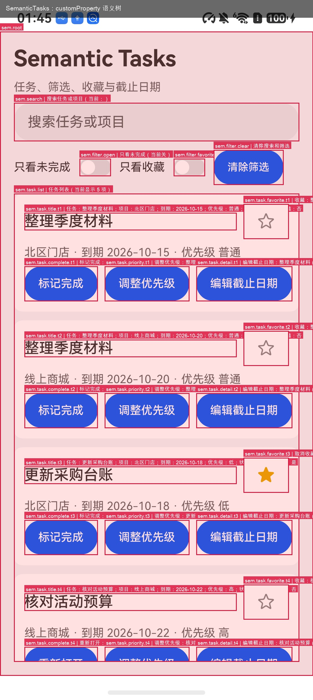
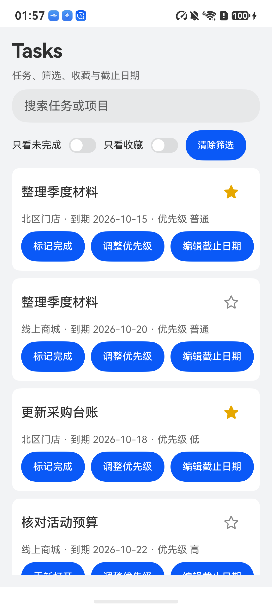
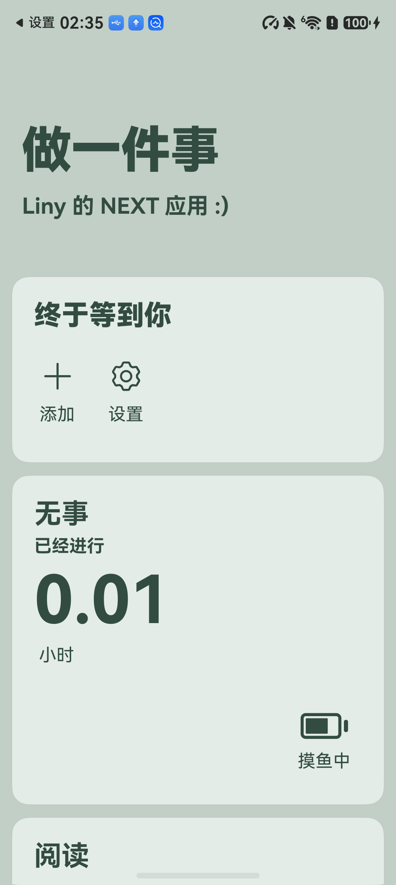
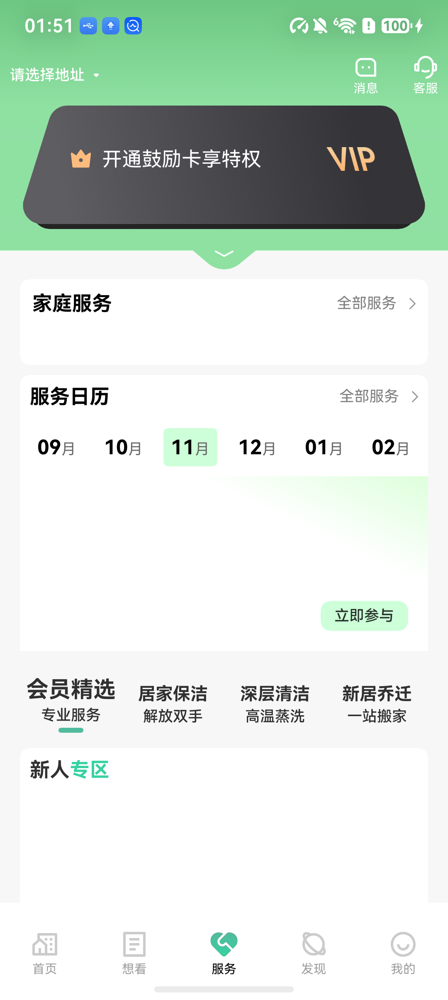

SCREENSHOT / RAW TREE
像素与层级
- 图标、重复标题和动态列表需要模型从画面里逐一消歧。
- 坐标定位；一次误判就会点错。
- 控件是否可点、可输入、可滚动，只能猜。
HARMONYOS · ARKUI · TEXT-ONLY AGENT
让纯文本模型直接读懂鸿蒙界面：不截图，不猜坐标，不靠图标猜测。
项目把开发者已经知道的控件含义、实体、状态和可用动作写进 ArkUI 源码的 customProperty，由应用内的调试桥在运行时读出，与 HapTest 的实时控件树按 id 合并。模型只接收语义节点和少量运行时事实，动作仍由原生 UI 框架执行。

问题
为什么不让模型看截图
截图和原始无障碍树把“看见界面”变成了一次推理。控件是什么、当前是什么状态、能做什么，原本都由应用代码决定，却要模型从像素和层级里重新推断。
SCREENSHOT / RAW TREE
SEMANTIC NODE
| 维度 | 截图 / 原始树 | 语义节点 |
|---|---|---|
| 模型输入 | 像素或完整层级 | meaning + state + actions + 少量 live facts |
| 目标定位 | 坐标或节点索引 | 稳定 id，按 id 合并 |
| 状态读取 | 从画面推断 | 源码声明的状态 |
| 动作能力 | 猜测 | 声明动作 + 原生能力双重校验 |
| 失败恢复 | 重新截图 | prepare 过期检查 + 动作后重观察 |
| 截图进入上下文 | 是 | 否 |
机制
源码 → 语义树 → 动作
四个边界：源码声明、运行时读取、宿主投影、原生执行。语义桥只读；动作不经过桥，仍由 HapTest 走原生 UI 框架。
SOURCE
组件在普通属性之外声明 SemanticSpec。稳定 id 是宿主合并实时控件的键；meaning、entity、state、actions 进入模型视图；accessibilityText 和 accessibilityDescription 保留给读屏与降级。
.id(`sem.task.favorite.${task.id}`)
.customProperty('sem', Sem.safe(() => Sem.node({
schema: 1,
id: `sem.task.favorite.${task.id}`,
role: 'action',
meaning: `收藏：${task.title}`,
state: { favorite: task.favorite },
actions: [{ name: 'toggle_favorite', input: 'tap' }]
}), Sem.fallback(`sem.task.favorite.${task.id}`)))BRIDGE
桥在 debug 构建的应用进程内启动，遍历当前挂载的 FrameNode，用 getCustomProperty('sem') 读取声明，用 getNodeType、isVisible、getChild 补充运行时事实。快照按 JSON-lines 返回；revision 只在内容变化时推进；prepare 在动作前确认目标仍然存在。
const raw = node.getCustomProperty('sem');
if (raw !== undefined) {
nodes.push({ ref: spec.id, id: spec.id,
type: node.getNodeType(), visible: node.isVisible(), ... });
}
for (let i = 0; i < node.getChildrenCount(); i++) {
visit(node.getChild(i), currentParent, nodes);
}PROJECT
HapTest 把快照和实时树按 id 合并，保留唯一命中的 live facts。执行前检查目标数量、可见、启用、声明动作与原生能力。输入框包在自定义组件里时，允许 __Common__ 包装节点，由 HapTest 的唯一焦点检查兜底。
const view = projectSemanticSnapshot(snapshot, observation.tree);
const check = validateSemanticAction(node, decision);
if (!check.ok) throw new SemanticError(check.errorCode, check.message);
await bridge.prepare(node.ref);
await device.tap({ selector: { id: node.id } });DECIDE
模型每步只返回一个 JSON 动作，只使用当前视图里的 ref，不接收坐标、截图或原始树全文。动作后宿主等待快照收敛：若 revision 未推进就重新读取，避免把“界面还没重渲染”误判成“动作无效”。同一 revision 的同一动作被重复保护。
{"action":"tap","ref":"sem.task.favorite.t1"}
{"action":"input","ref":"sem.stuffs.add.name","text":"阅读"}
{"action":"finish","summary":"已添加目标卡片“阅读”。"}Button(task.favorite ? '取消收藏' : '收藏')
.id(`sem.task.favorite.${task.id}`)
.accessibilityText(`收藏：${task.title}`)
.accessibilityDescription('点击切换收藏状态')
.customProperty('sem', Sem.safe(() => Sem.node({
schema: 1,
id: `sem.task.favorite.${task.id}`,
role: 'action',
meaning: `收藏：${task.title}`,
entityKind: 'task',
entityKey: task.id,
state: { favorite: task.favorite },
actions: [{ name: 'toggle_favorite', input: 'tap' }],
risk: 'changes_data'
}), Sem.fallback(`sem.task.favorite.${task.id}`))){
"ref": "sem.task.favorite.t1",
"role": "action",
"meaning": "收藏：整理季度材料（项目：北区门店，到期：2026-10-15）",
"state": { "favorite": false, "completed": false },
"actions": [
{ "name": "toggle_favorite", "input": "tap", "label": "收藏" }
],
"risk": "changes_data",
"live": {
"type": "Button",
"clickable": true,
"visible": true
},
"liveCount": 1
}SYSTEM RULES
只使用当前视图里的 ref；不发明坐标、隐藏页面或新的 id。
目标缺失、歧义或任务已完成时结束，并给出简短摘要。
视图 revision 未变化时不重复同一动作；滑块类控件一次点击后检查新值。
动作改变了视图且目标条件已满足时立即结束。
动作后先等快照收敛，再判断动作是否生效。
任务
三项任务的真实轨迹
轨迹取自 evaluation/evidence 的 JSONL。下面是两步完成的收藏、六步完成的卡片添加，以及两步完成的标签切换。状态验证来自应用侧日志或桥快照，不读取 Agent 自述。
TASK 01 · TASKS
自建应用 · 应用侧 SEM_EVAL 验证
sem.task.favorite.t1
模型在 rev 1 看到 state.favorite=false 和 actions[0].input=tap，选择收藏按钮。HapTest 按 id 唯一命中实时 Button，执行原生点击。
结果tapped sem.task.favorite.t1
summary
rev 2 中 state.favorite=true。模型结束并给出摘要；应用写入 SEM_EVAL，宿主独立读取并核对目标字段与非目标字段。
结果“整理季度材料”（项目：北区门店）已收藏。
{
"ref": "sem.task.favorite.t1",
"type": "Button",
"meaning": "收藏：整理季度材料（项目：北区门店，到期：2026-10-15）",
"state": { "favorite": false, "completed": false },
"actions": [{ "name": "toggle_favorite", "input": "tap" }],
"live": { "clickable": true, "visible": true },
"liveCount": 1
}STATE CHANGE
false→true SEM_EVAL t1.favorite=true；非目标字段未变化。

TASK 02 · STUFFS_NEXT
开源应用 · MIT · 应用侧桥快照验证
sem.stuffs.add
添加按钮是自定义组件，语义节点类型为 __Common__；宿主用实时树确认它可点击后执行点击，添加面板出现。
结果tapped sem.stuffs.add
sem.stuffs.add.name
目标名称输入框同样包在自定义组件里。宿主重新观察、点击输入框、确认焦点、输入中文，然后按 BACK 收起键盘。
结果entered "阅读" into sem.stuffs.add.name
sem.stuffs.scroll
滚动 WaterFlow，被键盘和折叠遮挡的“添加”按钮进入可见区域。本次一次成功。
结果scrolled sem.stuffs.scroll forward
sem.stuffs.add.ok
宿主校验实时 Button 可见、可点击，执行原生点击；应用把卡片写入本地 KVStore。
结果tapped sem.stuffs.add.ok
summary
新的快照里 cards.summary 显示数量为 1，extra 包含“阅读”。模型结束；宿主用快照而不是 Agent 摘要做最终判定。
结果已添加名称为“阅读”的目标卡片。
{
"ref": "sem.stuffs.add.name",
"type": "__Common__",
"role": "input",
"meaning": "目标名称输入框",
"actions": [{ "name": "set_card_name", "input": "set_text" }],
"live": { "inputable": true, "visible": true }
}
{
"ref": "sem.stuffs.cards.summary",
"role": "content",
"meaning": "主页标题；目标卡片数量：1",
"state": { "value": 1, "extra": "阅读" }
}STATE CHANGE
0→1 extra 包含“阅读”；前后截图与桥快照一致。

TASK 03 · RENTAL
开源应用 · MIT · 底部标签状态验证
sem.rental.tab.2
标签节点声明 passthrough: true。宿主不要求实时节点自身 clickable，而是按节点 bounds 的中心执行原生 tap；切换仍由应用原有的 Tabs.onChange 完成。
结果tapped sem.rental.tab.2
summary
宿主等待快照收敛后，revision 推进到 2，sem.rental.tab.2.selected=true，服务页同时渲染。模型据此结束；截图与快照一致。
结果已切换到服务页，服务标签当前已选中。
{
"ref": "sem.rental.tab.2",
"type": "Column",
"meaning": "底部标签：服务",
"state": { "selected": true },
"actions": [{ "name": "switch_tab", "input": "tap" }],
"passthrough": true,
"live": { "visible": true },
"liveCount": 1
}STATE CHANGE
false→true服务页渲染；其余四个标签 selected=false。

STUFFS_NEXT 的毛玻璃任务在目标值已达到后多点了一次，被重复动作保护停止；独立快照仍判定通过，Agent 没有自行 finish。这项结果保留在限制中。
改动
改动集中在四个边界
没有改 ArkUI 框架，也没有训练模型。改动落在应用声明、宿主语义层、观察与输入路径、标注与评测工具四处。
Sem.ets 定义 SemanticSpec、Sem.node、Sem.safe 和 Sem.fallback；SemanticBridge.ets 在 debug 构建中启动本机 TCP 服务；自建应用和两个开源应用给任务相关组件补上稳定 id、语义声明与无障碍文本。桥只读，不提供点击、输入或业务回调。
.id(`sem.task.complete.${task.id}`)
.customProperty('sem', Sem.node({
schema: 1,
id: `sem.task.complete.${task.id}`,
role: 'action',
meaning: `切换任务完成状态：${task.title}`,
state: { completed: task.completed, priority: task.priority },
actions: [{ name: 'toggle_completion', input: 'tap' }],
risk: 'changes_data'
}))examples/semantic-tasks-app/entry/src/main/ets/semantics/ · Sem.ets · SemanticBridge.ets · pages/Index.ets
src/semantic/ 包含类型、桥客户端、投影与动作校验、模型客户端、Agent 循环和 CLI。循环是“快照 → 实时观察 → 投影 → 决策 → 校验 → prepare → 执行 → 重观察”，每一步写入 JSONL 轨迹；同一 revision 的同一动作触发重复保护。动作后若快照 revision 未推进，宿主会等待并重新读取（最多 5 次、间隔 250ms），避免读到重渲染前的旧内容。声明 passthrough 的节点按 bounds 执行原生 tap，用于原生手势容器。CLI 提供 haptest semantic tree 与 haptest semantic run。
const view = projectSemanticSnapshot(snapshot, observation.tree);
const llmResult = await llm.decide({ task, view, history });
const validation = validateSemanticAction(node, decision);
if (!validation.ok) throw new SemanticError(validation.errorCode, validation.message);
await bridge.prepare(node.ref);
await execute(decision, node, observation);src/semantic/types.ts · bridge_client.ts · project.ts · llm.ts · agent.ts · cli.ts
输入法窗口曾比应用窗口更高，被误当成前台树。现在 dumpViewTree 先按 bundle 过滤页面再选择；observe、typeText 和坐标校验使用同一个 bundle。文本输入在点击后重新观察、确认焦点、输入、再观察并按 BACK 收起键盘。自定义组件包装的输入框允许 __Common__ 通过前置校验，由 HapTest 的唯一焦点输入框检查兜底。
const observation = await device.observe({ bundleName });
...
await device.tap({ selector: { id: node.id } });
await device.observe({ bundleName });
await device.typeText(text);
await device.observe({ bundleName });
await device.pressKey('BACK');src/device/device.ts · src/device/harmony/session.ts · test/e2e/run.js
tools/annotator/ 用 SDK 自带 TypeScript 4.9.5 的 ScriptKind.ETS 解析组件调用、修饰符链和源码位置；规则生成候选提案，前 8 个候选交给模型生成结构化提案；apply 在组件调用后插入 .id 与 .customProperty，并补 Sem import。评测脚本重置应用、采集前后截图、运行 Agent，再用 SEM_EVAL 或桥快照独立判分。
ANNOTATOR_SELFTEST_OK candidates=6
components=Column,Text,Button,TextInput,Slider,Image
Usage: cli.js scan|propose|apply --project <dir> [--out <file>]tools/annotator/cli.js · tools/annotator/selftest.js · evaluation/run_self_eval.py · evaluation/run_stuffs_eval.py · evaluation/run_rental_eval.py
tools/annotation-audit/ 解析上游源码与标注后源码，逐文件比对：只允许新增 id、无障碍文本和 customProperty；新增事件或布局修饰符、改动已有修饰符参数、增删渲染文本或 @State 都会报错；新文件只允许出现在 semantics/ 下。11 个自测用例固定这些判定。对真实上游基线审计：Rental 82 个源文件、STUFFS_NEXT 5 个源文件，均 0 findings。审计首次运行就抓到 STUFFS 的隐藏节点用了新增 visibility，改为把汇总挂到已有节点后通过。
ANNOTATION_AUDIT_SELFTEST_OK cases=11
Rental baseline=8c6eb31b files=82 changed=2 added=2 findings=0
STUFFS baseline=e35b7584 files=5 changed=2 added=2 findings=0tools/annotation-audit/cli.js · tools/annotation-audit/selftest.js · evaluation/annotations/*/audit.json
相对 HapTest bb3325e：87 个文件，+15,790 / −13。开发分支为 feat/semantic-arkui-agent；公开仓库是清理签名材料、设备标识与本机路径后的快照。
结果
13 项任务，13 项验证
13 项任务，13 项独立验证通过。12 项 Agent 自行结束；STUFFS 的毛玻璃任务由重复动作保护停止。所有任务都没有把截图送进模型上下文。
| 应用 | 类型 | 任务 | 验证通过 | 自行结束 | Prompt | Completion |
|---|---|---|---|---|---|---|
| Tasks | 自建 ArkTS 应用 | 8 | 8/8 | 8/8 | 131,335 | 564 |
| STUFFS_NEXT | 开源应用 · MIT | 4 | 4/4 | 3/4 | 63,195 | 495 |
| Rental | 开源应用 · MIT | 1 | 1/1 | 1/1 | 8,529 | 50 |
| 合计 | 13 | 13/13 | 12/13 | 203,059 | 1,109 |
PROMPT TOKENS BY TASK
按 token 降序；数值包含系统提示、语义树和历史，不含截图。
| 任务 | 应用 | Prompt tokens |
|---|---|---|
| 截止日期 | Tasks | 36,123 |
| 添加卡片 | STUFFS_NEXT | 22,650 |
| 毛玻璃 | STUFFS_NEXT | 22,594 |
| 优先级 | Tasks | 14,249 |
| 标记完成 | Tasks | 14,244 |
| 收藏 | Tasks | 14,239 |
| 重新打开 | Tasks | 14,236 |
| 取消收藏 | Tasks | 14,227 |
| 只看收藏 | Tasks | 12,009 |
| 搜索 | Tasks | 12,008 |
| 打开添加 | STUFFS_NEXT | 8,993 |
| 打开设置 | STUFFS_NEXT | 8,958 |
| 切换标签 | Rental | 8,529 |
TASKS
7 / 30 / 4
文件 / AST 候选 / LLM 提案
STUFFS_NEXT
7 / 165 / 3
文件 / AST 候选 / LLM 提案
SELFTEST
6 组件
ANNOTATOR_SELFTEST_OK
HOW IT WAS VERIFIED
Tasks 的应用自己写入 SEM_EVAL；评测器在 Agent 通道之外读取日志，检查目标字段与非目标字段。STUFFS_NEXT 使用应用侧桥快照与前后截图，没有独立数据库 oracle。Rental 使用标签 selected 状态与截图。Agent 的自述不是验收依据。
限制
结果能说明什么
这些限制决定结果能说明什么，也决定下一轮该补什么。
首页房源依赖远端接口，离线时为空；搜索、预订等业务流没有验证。
release 包的隔离、签名发布和桥代码裁剪没有验证。
自建应用有 SEM_EVAL 日志；STUFFS 使用应用侧桥快照和截图，没有独立数据库 oracle。
只覆盖任务相关页面和常见组件；自定义组件、设置面板剩余控件、卡片列表行没有全部标注。改动边界已由 AST 审计强制，但覆盖率仍是局部的。
毛玻璃任务在目标值已达到后多点了一次，被重复动作保护停止；状态验证通过，但 Agent 没有自行 finish。
没有多种子、重复运行或对照条件；结果不构成统计显著的效能结论。
个别摘要把动作后的最终状态说成“无需操作”；实际动作和状态变化以轨迹、快照和日志为准。
应用没有新增 onClick，2 步完成。passthrough 只适用于已声明原生 tab 手势的节点；严格零 UI/逻辑改动仍以截图/控件树 diff 为准。
下一步
7 项多步任务，5 项通过
4 个开源应用、7 项 5–20 步的任务，5 项通过。判分只读应用侧语义快照，要求起始状态不成立；超过 20 步或撞墙钟都算失败，即使最终状态正确。
| 应用 | 任务 | 步数 | 结果 | 耗时 |
|---|---|---|---|---|
| fenben | 加两个参与人 + 两道菜 | 11 | 通过 | 572s |
| fenben | 依次加三道菜 | 14 | 通过 | 567s |
| fenben | 加两人一菜后进入认领页 | 9 | 通过 | 421s |
| STUFFS_NEXT | 开设置、调毛玻璃、关面板 | 5 | 通过 | 259s |
| Rental | 依次切三个标签后停在“发现” | 5 | 通过 | 189s |
| STUFFS_NEXT | 连续添加两张卡片 | 20 | 失败（MAX_STEPS） | 1185s |
| jijian | 依次切三个标签后停在“统计” | 4 | 失败（状态不符） | 216s |
| 合计 | 7 项 | 68 | 5 通过 | 3,411s |